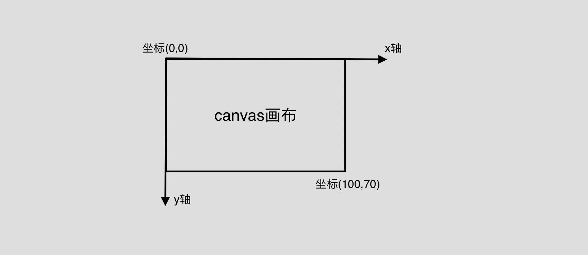

这次介绍一下做一个canvas画板过程中遇到的问题以及一些值得记录的知识点。
一、鼠标常用事件
1、mousedown 鼠标按下事件
1 | window.onmousedown = function(e){ |
2、鼠标移动事件
1 | window.onmousemove = function(e){ |
2、鼠标松开事件
1 | window.onmouseup = function(e){ |
二、创建画布
1、Canvas
HTML5的新标签canvas能够直接创建画布。在此有一点需要明确，画布的宽高必须通过属性来设置，不能通过样式来调整，通过样式来调整的画布会将画布放大或者缩小。即画布样式设置为：1
<canvas id="canvas" width=300 height=300></canvas>
如果需要改变canvas宽高的话，最好使用js进行宽高的计算。1
2
3
4
5
6
7
8
9var oHeight = document.documentElement.clientHeight;
var oWidth = document.documentElement.clientWidth;
var canvas = document.getElementById('canvas');
canvas.height = oHeight;
canvas.width = oWidth;
//如果需要随着屏幕大小变化改变画布大小，可监听window的resize事件，添加如下代码：
window.onresize = function(){
//此处代码为以上五行代码
}
2、绘制图形
canvas起初是空白的。为了展示，首先脚本需要找到渲染上下文，然后在它的上面绘制。canvas 元素有一个叫做 getContext() 的方法，这个方法是用来获得渲染上下文和它的绘画功能。初始代码为：1
2var canvas = document.getElementById('canvas');
var ctx = canvas.getContext('2d');
在正式绘图之前，我们需要了解下canvas栅格：

canvas元素默认被网格所覆盖。通常来说网格中的一个单元相当于canvas元素中的一像素。栅格的起点为左上角（坐标为（0,0））。所有元素的位置都相对于原点定位。
HTML中的元素canvas只支持一种原生的图形绘制：矩形。所有其他的图形的绘制都至少需要生成一条路径。接下来分别介绍下：
1）矩形：
canvas提供了三种方法绘制矩形：1
2
3fillRect(x, y, width, height) //绘制一个填充的矩形
strokeRect(x, y, width, height) //绘制一个矩形的边框
clearRect(x, y, width, height) //清除指定矩形区域，让清除部分完全透明。
效果地址。
代码中：1
2
3ctx.fillRect(20, 20, 20, 20) //表示在坐标为(20,20)的位置为起点，绘制一个宽高都为20的矩形并填充为默认色黑色
ctx.strokeRect(50, 50, 30, 40) //表示在坐标为(50,50)的位置为起点，绘制一个宽为30高为40的矩形并描边，默认色黑色
ctx.clearRect(25, 25, 5, 5) //表示在坐标为(25,25)的位置为起点，擦除一个宽高都为5的矩形
2）绘制路径
图形的基本元素是路径。路径是通过不同颜色和宽度的线段或曲线相连形成的不同形状的点的集合。一个路径，甚至一个子路径，都是闭合的。使用路径绘制图形需要以下步骤：
-> 创建路径起始点。语法为：beginPath()
-> 使用画图命令去画出路径。常用语法为：moveTo()、lineTo()
-> 路径封闭。语法为： closePath()
-> 路径生成，通过描边或填充路径区域来渲染图形。常用语法为：fill()、stroke()
这里需要特殊说明，闭合路径closePath(),不是必需的。这个方法会通过绘制一条从当前点到开始点的直线来闭合图形。如果图形是已经闭合了的，即当前点为开始点，该函数什么也不做。当你调用fill()函数时，所有没有闭合的形状都会自动闭合，所以你不需要调用closePath()函数。但是调用stroke()时不会自动闭合。
下面开始正式绘制图形：
1⃣️ 绘制一个三角形1
2
3
4
5
6
7
8
9ctx.beginPath();
ctx.moveTo(100,100);
ctx.lineTo(100,150);
ctx.lineTo(150,150);
ctx.closePath();
ctx.strokeStyle = 'red';
ctx.stroke();
ctx.fillStyle = '#666';
ctx.fill();
2⃣️ 绘制直线1
2
3
4
5
6ctx.beginPath();
ctx.moveTo(0,200);
ctx.lineTo(140,250);
ctx.strokeStyle = 'green';
ctx.lineWidth = 4;
ctx.stroke();
3⃣️ 绘制圆弧1
2
3
4
5
6ctx.beginPath();
ctx.arc(250,250,20,0,Math.PI * 2,true); //true表示顺时针方向绘图，false则反之
ctx.fillStyle = "yellow";
ctx.strokeStyle = "blue";
ctx.fill();
ctx.stroke();
4⃣️ 绘制矩形1
2
3
4
5
6
7
8ctx.beginPath();
ctx.moveTo(50,300);
ctx.lineTo(150,300);
ctx.lineTo(150,350);
ctx.lineTo(50,350);
ctx.closePath();
ctx.stroke();
ctx.fill();
5⃣️ Path2D
综上，我们可以使用一系列的路径和绘画命令来把对象“画”在画布上。为了简化代码和提高性能，Path2D对象已可以在较新版本的浏览器中使用，用来缓存或记录绘画命令，这样你将能快速地回顾路径。目前这个存在兼容性问题，不再进行过多介绍。1
2
3
4
5
6
7
8
9var rectangle = new Path2D();
rectangle.rect(200, 200, 50, 50);
var circle = new Path2D();
circle.moveTo(125, 35);
circle.arc(100, 35, 25, 0, 2 * Math.PI);
ctx.stroke(rectangle);
ctx.fill(circle);
以上绘图示例详情参考我的画板。
本文对很多语法没有做过多的说明，详情参考MDN。
个人原创。转载请注明出处。